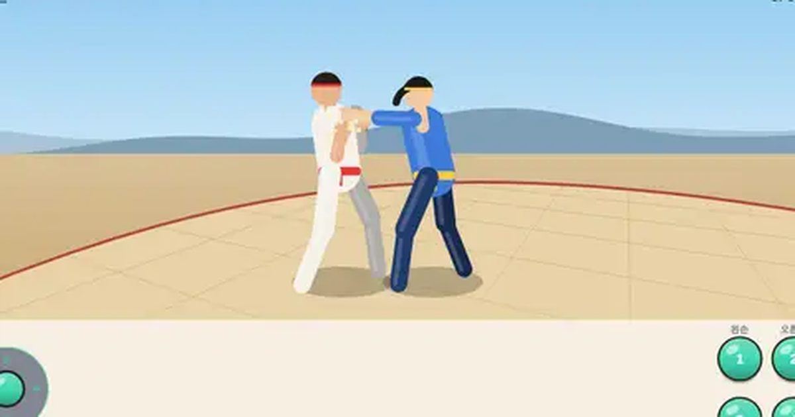

링 파이터
Ring Fighter
3D 격투 · 1P/2P무료설치 없음폰 · PC
▶ 지금 바로 하기로그인 없이 브라우저에서 바로 시작돼요
어떤 게임인가요?
3D 시점 격투. 왼손·오른손·왼발·오른발 4버튼, 옆걸음으로 피하고, 어퍼컷으로 띄워 공중 콤보! 3판 2선승.
목표 · 상대 체력을 0으로 만들어 K.O.! 3판 중 2판을 먼저 이기면 승리 (한 판 60초).
게임 방법
- 1·2는 왼손·오른손, 3·4는 왼발·오른발. 1 → 2 → 4 처럼 이어 누르면 연속기가 나가요.
- 막기: 뒤로 누르고 있으면 상단·중단을 막아요. 하단(앉아서 치는 공격)은 앉아서 막아야 해요.
- 앉으면 상단 공격이 머리 위로 지나가요. 대신 중단에는 맞아요.
- 옆걸음: 위·아래를 짧게 톡. 직선 공격을 옆으로 피해요. 돌려차기처럼 휘는 공격은 못 피해요.
- 앞+2 어퍼컷에 맞으면 공중에 떠요. 떨어지기 전에 계속 때리면 공중 콤보!
- 1+2 동시: 잡기 (막고 있는 상대에게 강함). 체력이 30% 아래로 떨어지면 분노 버튼이 한 번 생겨요.
등장하는 것들
- 상단 (1 · 2 · 4) · 서서 막기 가능 · 앉으면 피함
- 중단 (3 · 앞+4 · 앞+2) · 서서 막기 가능 · 앉으면 맞음
- 하단 (아래+1 · 3 · 4) · 앉아서 막기
- 잡기 (1+2) · 막기 불가 · 앉은 상대는 못 잡음
공략 팁
- 상대가 크게 헛친 뒤(돌려차기·다리 걸기)가 반격 기회. 앞+2 어퍼컷으로 띄우세요.
- 공중 콤보는 1 → 2 → 4 순서로 짧게 이어 치면 잘 들어가요.
- 상대가 계속 막기만 하면 1+2 잡기, 계속 서서 막으면 아래+3 다리 걸기.
- 직선 공격(잽·스트레이트·앞차기)은 옆걸음으로 흘리고 바로 반격!
 승부차기
승부차기 구름 점프
구름 점프 솔리테어
솔리테어 추억의 핀볼
추억의 핀볼 막대 파이터
막대 파이터 골목 대장
골목 대장